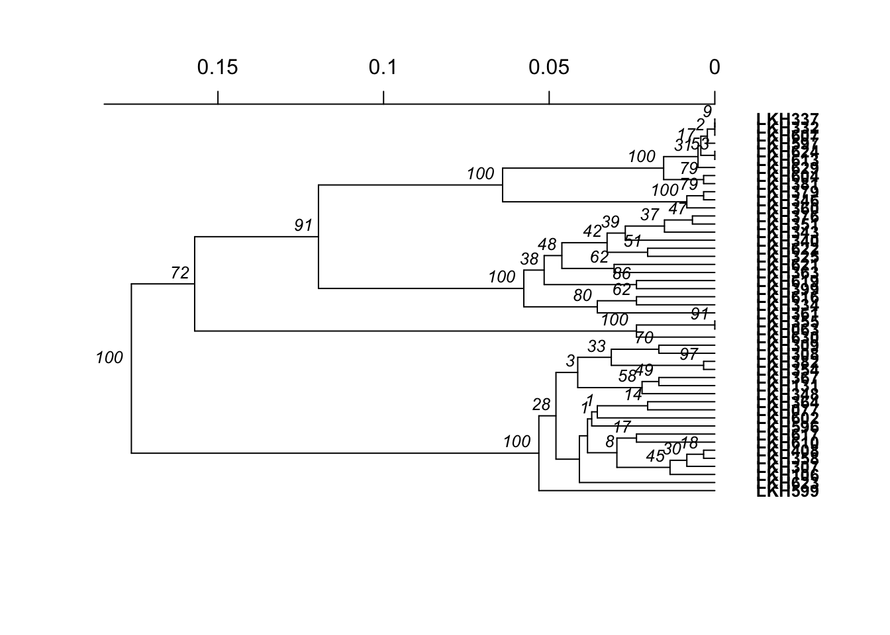
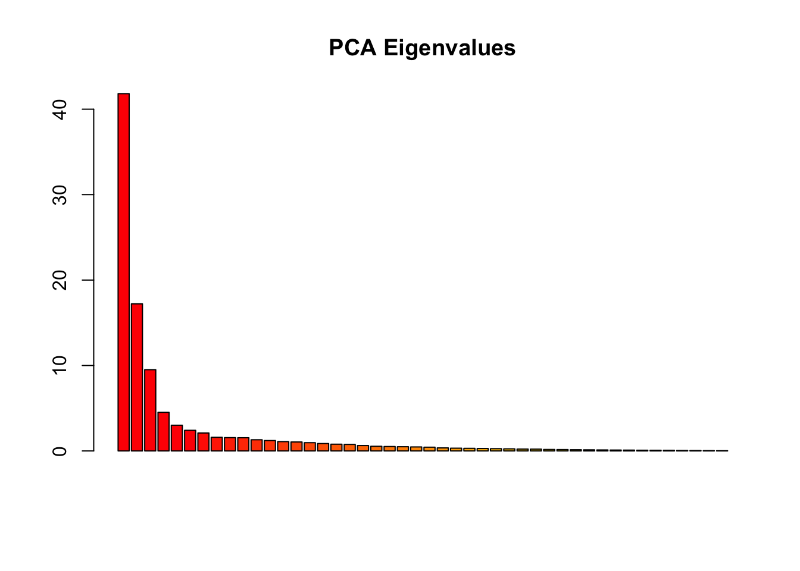
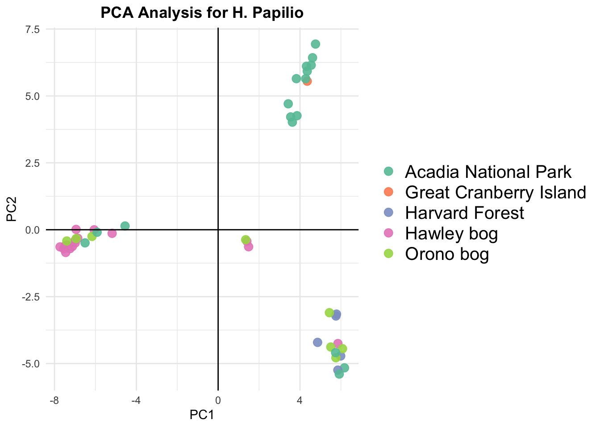

Hyalopshenia papilio, 32 sequence reference
1/7/2021
Dendrogram & PCA for H. Papilio Samples, 32 Sequence Reference
Parameters for vcf:
-BBMap - MINID 0.76 -Varscan - p-value 0.05, min-avg-qual 20 -VCFtools - max-missing 0.8, mac 3, minDP 3, individuals with > 70% missing data removed from analysis
After loading the needed packages, vcf file, and population tsv file, we convert the vcfR object to a genlight object, and then add the needed population information.
One way to visualize the population structure is with a simple phylogenetic tree. Here, the upgma tree building method is used, and the bitwise.dist function is used to efficiently calculate Euclidian distance from the genlight object.
The ggtree package is an extension of ggplot2, following a similar grammar of graphics. This provides us with flexibility in shaping the aesthetic features of the tree plot. Here, geom_tiblab() was used to add the individual names as the tip labels, and the population as the tip color. geom_nodelab() was used to include the bootstrap values on the nodes.
#population information for tip labels
col_pop <- tibble("tip.label" = pap_76_genlight$ind.names, "population" = pap_76_genlight$pop)
#tree generated with 100 bootstrap replicates
all_tree <- aboot(pap_76_genlight, distance = bitwise.dist, sample = 100)##
Running bootstraps: 100 / 100
## Calculating bootstrap values... done.
#convert phylo object to ggtree object and add column information
tree <- ggtree(all_tree) %<+% col_pop
#plot the tree
tree +
geom_tiplab(aes(fill = (population)),
geom = "label",
label.padding = unit(0.15, "lines"),
label.size = 0,
size = .2) +
geom_nodelab() +
scale_fill_brewer(palette = "Set2") +
labs(title = "H. Papilio Samples Mapped to 32 Sequence Reference",
fill = "Population") +
theme(plot.title = element_text(hjust = .5, face = "bold", size = 19),
legend.title = element_text(face = "bold", size = 14),
legend.text = element_text(size = 15)) 
Additionally, we can visualize population structure with principal components analysis. The glPca function performs PCA analysis on a genlight object.
#pca computation, choose number of factors to explain sufficient variance
pap_pca <- glPca(pap_76_genlight, nf = 3)
barplot(100*pap_pca$eig/sum(pap_pca$eig), col = heat.colors(50), main="PCA Eigenvalues")
#convert to data frame for plotting
all_pca_scores <- as.data.frame(pap_pca$scores)
#add population info
all_pca_scores$pop <- pop(pap_76_genlight)
#plot PCA, colored by population
pca_plot <- ggplot(all_pca_scores,
aes(x=PC1, y=PC2, colour = pop)) +
geom_point(size=3, alpha = .9) +
geom_hline(yintercept=0) +
geom_vline(xintercept=0) +
theme_minimal() +
scale_color_manual(values = brewer.pal(7, "Set2")) +
labs(title = "PCA Analysis for H. Papilio") +
theme(
plot.title = element_text(face = "bold", hjust = .5),
legend.title = element_blank(), legend.text = element_text(size = 15))
pca_plot